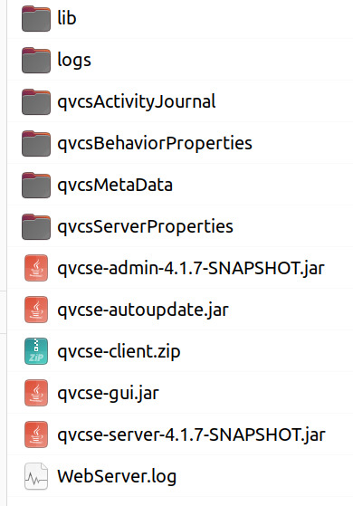

|
QVCS-Enterprise Files and DirectoriesThere are a number of directories and files that QVCS-Enterprise client and server use. These files are located in the qvcsAdminData, qvcsBehaviorProperties, qvcsMetaData, qvcsProjectProperties, and qvcsProjectsArchiveData directories that are located beneath the directory where you install the QVCS-Enterprise jar files.  Many of these files are created after running the client or server. Files in the lib directoryThe lib directory contains 3rd party library files (.jar files) that are needed for the client and/or server. Files in the qvcsActivityJournal directoryThis directory is created on the server. It contains a single file: qvcs.server.journal. This journal file contains a chronological record of activities performed by the server. The server continually appends to this file as activities are performed. You can safely delete this file (when the server has been stopped). It is meant to serve as a record of server activities. The server never reads from this file. Files in the qvcsAdminData directoryThe qvcsAminData directory contains four files (and their backup copies):
The server is the only application that reads or writes to files in this directory. The admin tool does not directly access any of these files. DO NOT ATTEMPT TO DELETE OR ALTER THESE FILES AS THEY ARE MAINTAINED BY THE SERVER APPLICATION. The qvcs.authenticationStore.dat file contains the list of users and their passwords. The passwords are stored as hashed values. The qvcs.rolePrivilegesStore.dat file contains the list of roles known to the server. Role definitions are described more fully here.The ADMIN user can define new roles and alter the actions that the server will allow for a role. The qvcs.roleProjectViewStore.dat file contains the associations between a project and its users and also contains the definition of what role(s) that user will have for a given project. The qvcs.viewStore.dat file contains the definitions of views known to the server. Files in the qvcsBehaviorProperties directoryThe qvcsBehaviorProperties directory contains three files:
The qvcs.comment.prefix.properties file is a property file that defines the default comment prefix strings that QVCS-Enterprise will associate with an individual archive file when that archive file is created. If you want to change the comment prefix string that QVCS-Enterprise will use for archive files, you should manually edit this file to either add the comment prefix to associate with a file extension type that is missing from the file, or change the comment prefix string that is currently associated with a given file extension. Note that the strings defined here are used only when the archive file is created -- after that, QVCS-Enterprise uses the value of the comment prefix string that is embedded in the individual archive file. QVCS-Enterprise uses the comment prefix string when it expands the $Log$ and $LogX$ keywords. If you do not use keyword expansion, then the comment prefix values are not used. The qvcs.extension.attributes.properties file identifies the default set of QVCS attributes that will be associated with a QVCS archive when it is created. The comments within the file help explain how the values in the file are used. As with the comment prefix property file described above, the extension attributes defined in this file are only used at the time that a QVCS archive file is created. The qvcs.keywords.properties file defines a number of properties that control the behavior of QVCS-Enterprise's keyword expansion features. QVCS-Enterprise keyword expansion is always done on the client, so the copy of this file that you should edit if you wish to change keyword behavior is the copy located on the client machine. Comments within the file provide guidance in making changes. A common change you would want to make to this file would be to update the CopyrightMessage property so that is has a useful value. You may also need to update the EOLSequence property to match your workstation (the default is set for a Linux/MacOS client). Files in the qvcsMetaData directoryThe qvcsMetaData directory contains data files that help QVCS-Enterprise keep track of additional version control related information. All the files in this directory are generated based on user actions, or based on data contained elsewhere. There will be some loss of behaviors (see below) if you delete these files, but the product will regenerate them during use so that functionality will eventually recover with the caveat that directory history and can only be anchored to dates after the creation date of the files in this directory. The files contained on the server in the qvcsMetaData directory look like:
The qvcs.archiveDigestStore.SERVED.dat file is a binary file and is the server's cache of digest values for the various file revisions contained within the archive files that the server hosts. A digest is simply the computed digest (similar in concept to a checksum) for a given file revision. When a revision is stored on the server, the server computes that revision's digest and saves that computed value in this file. When the QVCS-Enterprise client wants to discover whether its workfile is different than the latest revision in its associated archive, it simply has to compute the digest for the workfile, and then compare that value with the digest value maintained in this file by the server. If the digest values are different (a simple comparison), then we are confident that the files are different; if the digest values are the same, then we are equally confident that the workfile is identical to the latest revision stored on the server. If this file gets deleted, then the server must recompute the digest value for a given file revision. This is always done in a 'lazy' way -- i.e. the digest is computed only when it's needed. The qvcs.directoryContentsLabelStore.dat file is a binary file that stores the association between a label and a given revision of the contents of a directory. As such, this file contains information that allows QVCS-Enterprise to support label based 'views' since the data in this file allows QVCS-Enterprise server to reconstruct what the contents of a given directory looked like when a specific label was applied to files contained in that directory. The qvcs.directoryIdDictionaryStore.dat file is a binary file that stores the association between a QVCS directory id, and the project/appended path for that directory id. Each archive directory on the QVCS-Enterprise server has an associated QVCS directory id. This file provides the association between that unique directory id and the directory's corresponding project name and the appended path of that directory within the given project. The qvcs.directoryIDStore.dat file is a binary file that stores current maximum directory id on the QVCS-Enterprise server. This maximum directory id increments as new directories are added to the server's archive directory tree. The qvcs.fileIdDictionaryStore.dat file is a binary file that captures the association between an archive file's file id and the file's containing directory id. The qvcs.fileIDStore.dat file is a binary file that that stores the current maximum file id on the QVCS-Enterprise server -- each separate archive file on the server has a unique QVCS file id. This maximum file id increments as files are added to version control. If you delete this file and restart the server, the server will re-initialize all the directory contents meta-data, making it so the earliest anchor date for any label or date based views will be the time that you restart the server for the first time after deleting this file. This is a possibly useful way to recover the server to a known state in the case that directory meta-data gets corrupted. The files contained on the client in the qvcsMetaData directory look like:
The qvcs.workfileDigestStore.username.dat will exist only on client machines. It serves a similar purpose as the archive digest store described above except that it caches digest values for the workfiles of an individual user. The username portion of the file name defines the name of the user that it is associated with. In addition to the digest value for the workfile, it also captures that timestamp associated with the creation of the workfile; i.e. when QVCS-Enterprise 'gets' a workfile copy from the server, it knows when that happens. The workfile digest store has this timestamp information in it as well. That timestamp information combined with the digest value allows the QVCS-Enterprise client to deduce the value to display in the 'File Status' column. If you delete this file, then QVCS-Enterprise can still compare the digest values to determine if the workfile is different than the most recent archive revision, but if the file is different, it cannot deduce whether the file has been edited locally, or if the file is out of date because a new revision has been checked in. In the case that the timestamp information is missing from this file, and the file is different than the tip revision of the archive, then the 'File Status' column will display just a value of 'Different', since nothing more can be known. As you perform 'gets', the timestamp information is added to the store, and the 'File Status' column can become more accurate. The qvcs.labelStore.username.dat is used to capture label strings that are used with the projects that you access. If you delete this file, it will get re-created and populated with useful label information, with little loss of functionality. Files in the qvcsProjectProperties directoryThe qvcsProjectProperties directory contains property files that define server properties and project properties. The server property files have names that are contructed from a name template that looks like: qvcs.servername.Server Name.properties The qvcs.servername.Server Name.properties type files will only exist on machines where you have run either the admin tool or the QVCS-Enterprise client application. The server does not use the server properties file at all. The contents of the server property file may be created by either the admin tool or the client application. You can edit its contents by selecting the server name, and then right clicking to get a context menu that you then use to select the menu option that allows you to edit the server properties. The server properties file defines such things as the server IP address, the ports that the server uses to listen on for connections from clients and for connections from the admin tool. The selection of the transport is handled automatically by the admin tool and client application. The project property files have names that are constructed from a name template that looks like: qvcs.served.project.Project Name.properties The qvcs.served.project.Project Name.properties type files will exist only on server machines; they do not exist on client machines. The name of the project properties file identifies the name of the project that it is associated with. The contents of the project properties file identify the location of the archive files associated with the project. Normally, this directory location will be the directory of the same name located in the qvcsProjectsArchiveData subdirectory. However, you can manually alter this location if you need to. Files in the qvcsProjectsArchiveData directoryThis directory is created on the server. The files contained in the directory trees beneath the qvcsProjectsArchiveData contain the revision history of the files that are under version control. The directory structure is very straight forward. For every project that is managed by the server, there is a separate sub-directory in the qvcsProjectsArchiveData directory that has the same name as the project name. The directory tree contained by the respective project directories contain the QVCS archive files for the given project. For example, if you have a project with the name "Test Project", there will be a "Test Project" directory located beneath the qvcsProjectsArchiveData directory. Contained in the "Test Project" directory tree will be all the QVCS archive files associated with the "Test Project" project. The directory structure in that directory tree matches the directory structure of the workfiles for that project's current Trunk view. Files in the qvcsProjectsDatabase directoryThis directory is created on the server. The files beneath this directory are database files for the derby database used by the server. DO NOT MESS WITH THESE FILES! Files in the qvcsProjectsReferenceCopies directoryThis directory is created on the server. If you have defined a project so that the server is supposed to make reference copies of the workfiles of that project, those reference copies will be contained within the directory hierarchy that begins in this directory. (A reference copy of a file under version control is a copy of the most recent revision of the workfile). Immediately beneath this directory will be directories that have the same name as the project names. Beneath those directories that have the names of the server's projects will be the actual reference copies of the project's workfiles. If keyword expansion is enabled for a file, its keywords will be expanded in the reference file. The Label keyword will be expanded to the newest floating label associated with the file. Files in the qvcsReports directoryThis directory is created on the client. This directory contains the .html files for any reports generated on the client. The QVCS client creates files in this directory when you select the Reports/Generate Report menu option. You have to manually delete these report files whenever you wish; the client application will not delete these files. Files in the qvcsUserData directoryThis directory is created on the client. There are 8 separate types of files contained in the qvcsUserData directory:
The currentWorkfileDigestStore.User name.dat binary file will exist only on client machines. It serves a similar purpose as the archive digest store described above except that it caches digest values for the workfiles of an individual IDE user. The username portion of the file name defines the name of the user that it is associated with. In addition to the digest value for the IDE workfile, it also captures that timestamp associated with the creation of the workfile; i.e. when QVCS-Enterprise 'gets' a workfile copy from the server for the IDE, it knows when that happens. This digest store allows the IDE to compute a useful workfile status for use within the IDE implementation. The qvcs.checkincomments.User name.properties text file captures the most recently used check in comments for the User name user. The MaxCommentCount value defines the maximum number of most recently used check in comments to save. The qvcs.checkOutCommentsStore.User name.dat binary file stores the checkout comments made by the User name user. The qvcs.fileGroupStore.User name.dat binary file contains the file groups that user User name has defined. The qvcs.filterStore.User name.dat file contains the filters that user User name has defined. This is a binary file. If you delete this file, the filter definitions will revert back to the built-in filters: "All files", "All files (including obsolete files), "C++ and .h source files", and "Java source files". This file gets populated with data as you define new filters using the "Maintain Filter Collections" dialog that is available from the "View/Maintain Filters" menu command. This file is only used by the client application, and will appear only on machines where you run the client application. The qvcs.username.User name.properties file is a general properties file for capturing settings associated with the User name user. It captures such things as screen size and screen location so when the client application is started it will have the same size and location as when it was last run. It also captures the workfile location that the User name user associates with a given project. The qvcs.viewUtilityStore.User name.dat binary file contains the paths to the utilities that user User name has associated with files that have a given file extension. This is used on Linux boxes to define the utility that should be used to view a file. The qvcs.visualCompare.User name.properties file captures settings that define the behavior for the visual comparison tool included with QVCS-Enterprise. You can edit the settings manually by editing this file, or you can change the settings captured in this file by clicking on the properties toolbar button in the built-in visual compare tool. There are 4 properties that you may wish to change:
All four properties default to a value of NO. You can change these values by clicking on the properties toolbar button on the built-in visual compare tool. Changing their respective values to YES will change the results of the visual compare the next time it is used. Note that these settings do not affect the comparison that is made as part of checking in revisions to the server. It's also useful to know that all visual comparisons are performed at the client; they are not performed on the server. |
| For the source code, see https://github.com/jimv39/qvcsos |